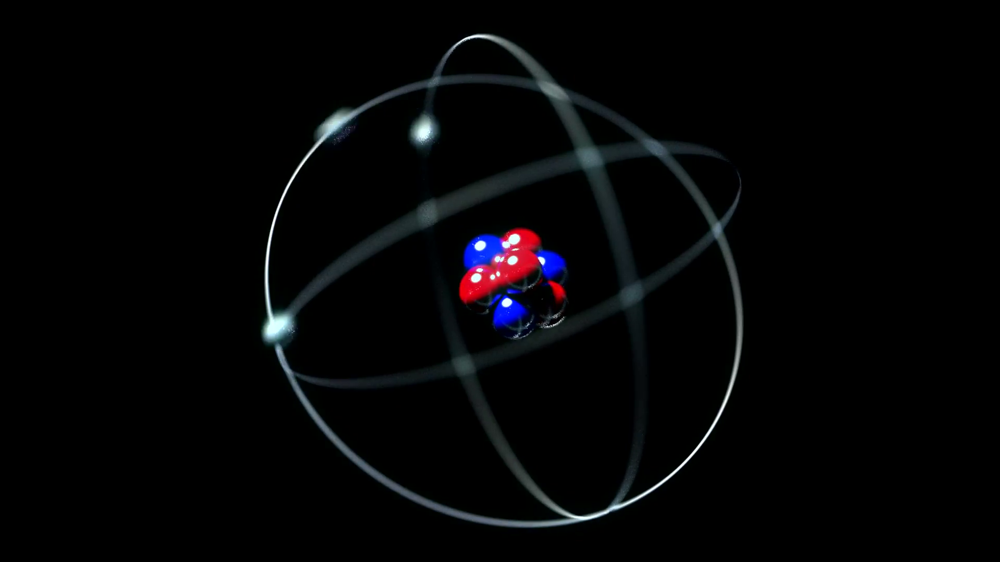

The neutron is a subatomic particle, symbol n or n0, with no net electric charge and a mass slightly larger than that of a proton. Protons and neutrons constitute the nuclei of atoms. Since protons and neutrons behave similarly within the nucleus, and each has a mass of approximately one atomic mass unit, they are both referred to as nucleons.[5] Their properties and interactions are described by nuclear physics.
The chemical and nuclear properties of the nucleus are determined by the number of protons, called the atomic number, and the number of neutrons, called the neutron number. The atomic mass number is the total number of nucleons. For example, carbon has atomic number 6, and its abundant carbon-12 isotope has 6 neutrons, whereas its rare carbon-13 isotope has 7 neutrons. Some elements occur in nature with only one stable isotope, such as fluorine. Other elements occur with many stable isotopes, such as tin with ten stable isotopes.